Merhaba, Ben İshak Karataş
Fırat Üniversitesi'nde Yazılım Mühendisliği öğrencisiyim. Web teknolojilerine, kullanıcı dostu tasarımlara ve yazılım dünyasına büyük bir merak duyuyorum. Problem çözmeyi, tasarlamayı ve güçlü bir ekip ruhuyla çalışmayı çok seviyorum!
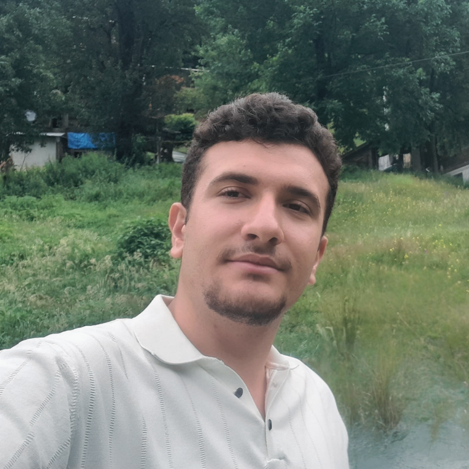
Hakkımda
Fırat Üniversitesi'nde Yazılım Mühendisliği öğrencisiyim. Yapay zekayı günlük hayatı kolaylaştırmak için oldukça fazla kullansam da bu metni kendim yazdım :) Başta web teknolojileri olmak üzere yazılım dünyasına büyük bir merak duyuyorum. Şu an hala bir öğrenci olarak kendimi elimden geldiğince geliştirmeye, yeni teknolojiler öğrenmeye ve İngilizcemi geliştirmeye çalışıyorum. Tasarım yapmaya bayılıyorum. Canva benim favori uygulamam. Figma ile de küçük deneme atışları yaptım; çünkü göze hitap eden, kullanıcı dostu sistem tasarımları oluşturmaktan çok keyif alıyorum.
Problem çözmeyi ve araştırma yapmayı seviyorum. Ancak bu süreci tek başıma ilerletmektense iletişim yeteneği güçlü insanlarla birlikte, bir ekip ruhuyla yürütmek benim için her zaman çok daha iyi! Bu doğrultuda, arkadaşlarımla kurduğumuz girişimcilik topluluğunda başkan yardımcılığı görevime de aktif olarak devam ediyorum.
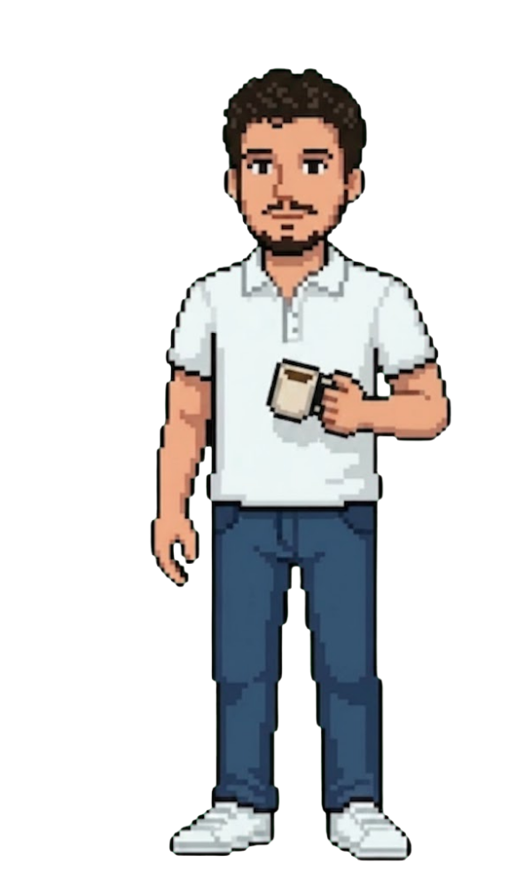
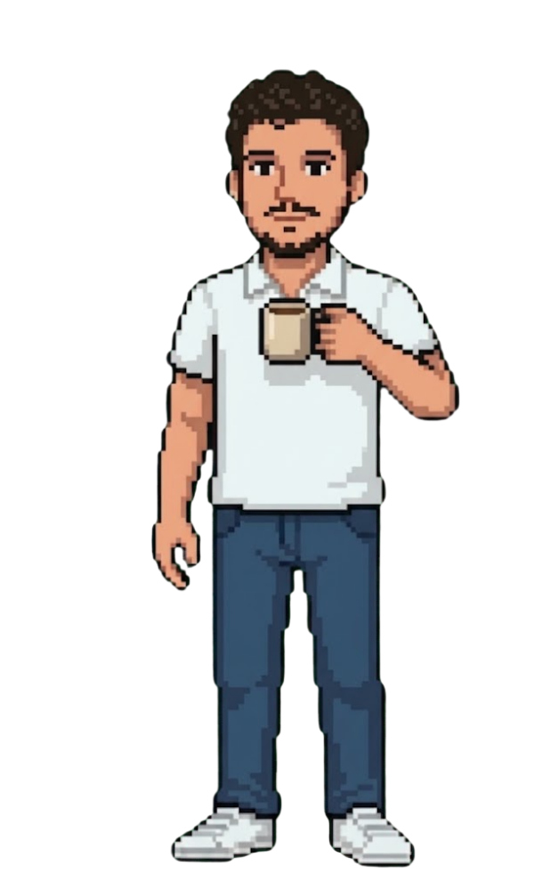
Eğitim
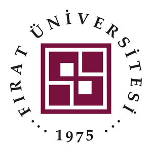
Veri yapıları, Nesne Yönelimli Programlama (OOP), Algoritma Analizi, Veritabanı Yönetim Sistemleri ve Modern Web Teknolojileri üzerine lisans eğitimi.
Deneyim
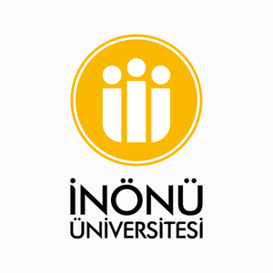
Cumhurbaşkanlığı İnsan Kaynakları Ofisi (CBİKO) Ulusal Staj Programı kapsamında, İnönü Üniversitesi Bilgi İşlem Daire Başkanlığı bünyesinde gerçekleştirilecek staj çalışması.
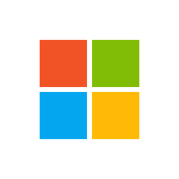
Microsoft AI Innovators Summer Internship programı kapsamında yapay zeka teknolojileri üzerine geliştirme çalışmaları.
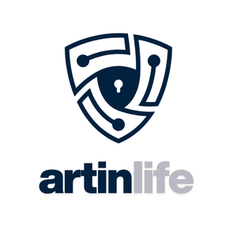
Elektrikli araç şarj istasyonlarının güvenlik analizi için; OCPP protokolü, SteVe yazılımı ve Python betikleri kullanılarak Google Cloud tabanlı sanal bir laboratuvar kurulması.
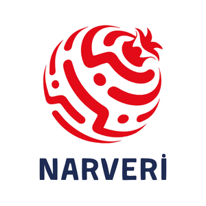
Web Scraping yöntemleriyle toplanan verilerin Python ve PySpark kullanılarak işlendiği ve MongoDB'ye aktarıldığı veri toplama ve işleme mimarisinin kurulması.
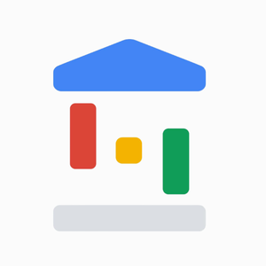
Yapay zeka, girişimcilik ve FastAPI gibi konularda online eğitimlerin olduğu bir süreçti. Ancak benim en çok verim aldığım kısım; rastgele ekiplere ayrıldığımız Ideathon, Hackathon ve Bootcamp süreçleri oldu. Bu sayede birçok yeni insan tanıdım ve kısa sürede kusursuz olmasa da ortaya projeler çıkardık.
Projelerim
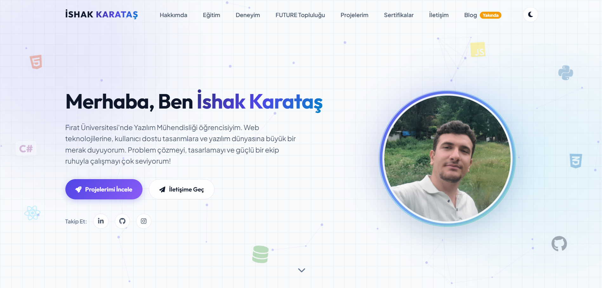
Bireysel ProjeKişisel Portföy Web Sitesi
Temmuz 2026HTML, CSS ve JavaScript kullanılarak geliştirilen; Matter.js 2D fizik motoru, özelleştirilmiş HTML5 Canvas düğüm animasyonları ve CSS Custom Properties ile zenginleştirilmiş, karanlık/aydınlık tema destekli interaktif portföy platformu.
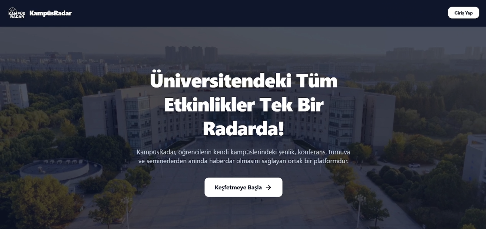
Bireysel ProjeKampüsRadar
Mayıs - Haziran 2026Üniversite kampüsü içerisindeki etkinlikleri, duyuruları ve konum tabanlı paylaşımları harita üzerinden takip etmeyi sağlayan mobil ve web platformu.
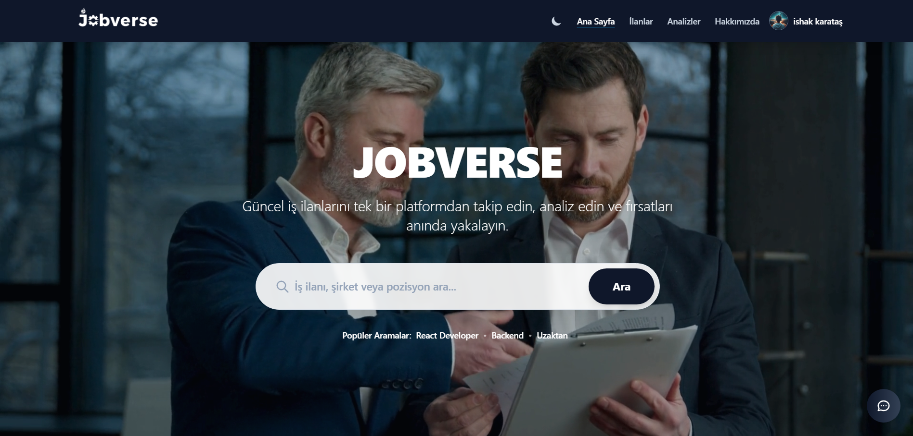
Takım ProjesiJOBVERSE
Ekim - Aralık 2025Farklı sitelere dağılmış iş ilanlarını tek bir merkezde toplayan; adaylara sadece iş arama kolaylığı değil, aynı zamanda maaş dağılımları ve popüler yetenekler gibi sektör trendlerini analiz etme imkanı sunan akıllı bir kariyer platformu.
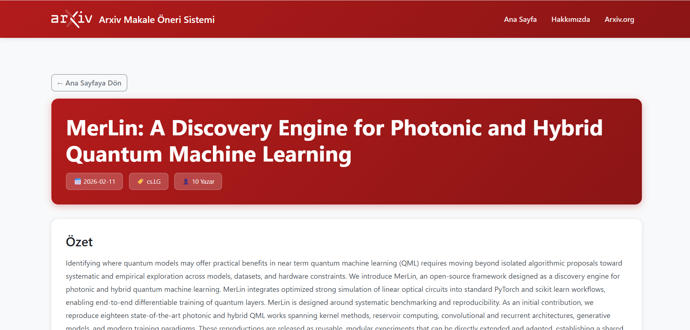
Bireysel ProjeMakale Öneri Sistemi
Ağustos - Eylül 2025arXiv veritabanı kullanarak filtreleme ve analiz yapan öneri motoru. PySpark ile büyük veri kümelerini işler ve kullanıcıya özel tavsiyeler sunar.
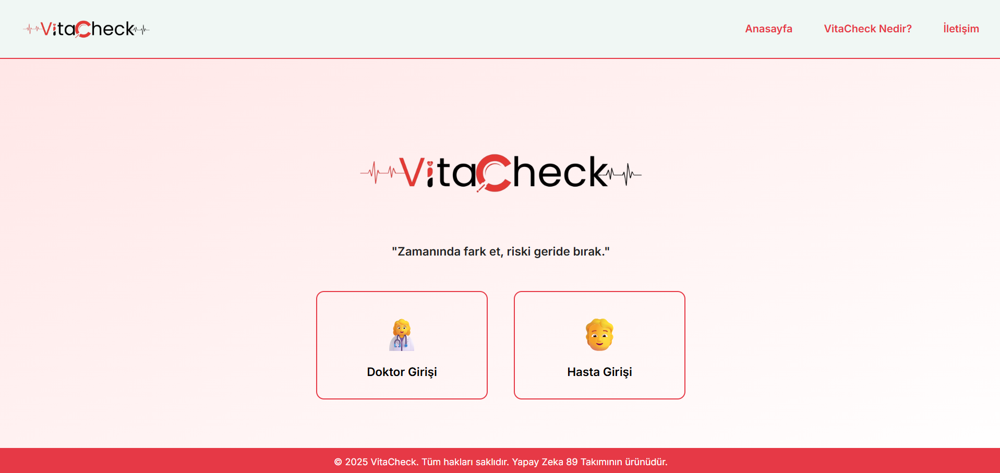
Takım ProjesiVITACHECK
Ağustos 2025Cardiovascular (kalp ve damar) hastalık riskini tahmin eden karar destek sistemi. Projede Frontend arayüz geliştirme ve UX optimizasyonu süreçlerini yürüttüm.
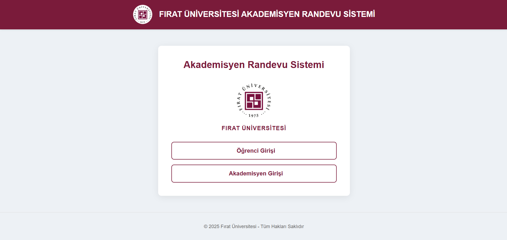
Bireysel ProjeAkademisyen - Öğrenci Randevu Sistemi
Nisan 2025Akademisyen ve öğrenciler arasında gerçek zamanlı bildirim, takvim yönetimi ve randevu takibi sunan platform. Supabase (BaaS) ile güvenli veri akışı sağlar.
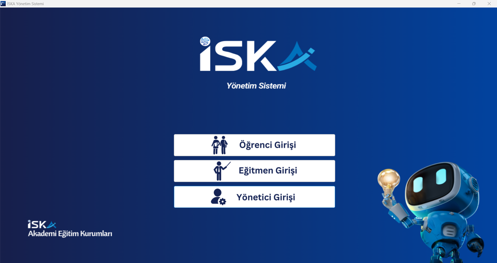
Bireysel ProjeİSKA Akademi Yönetim Otomasyonu
Aralık 2024Eğitim kurumları için kapsamlı öğrenci, personel ve ders takip otomasyonu. DevExpress bileşenleri ve MSSQL ile zengin raporlama ve takip modülleri sunar.
Sertifikalar
Prompt Mühendisliği Eğitimi
TURKCELL Geleceği Yazanlar
Millî Teknoloji Kulüpler Birliği Akademisi
TÜBİTAK Bilim ve Toplum Başkanlığı
Erzurum Aşkale Gençlik Kampı
Yapay Zeka Zirvesi 2024
BTK Akademi & Google & Girişimcilik Vakfı
İletişim
Bir Projeniz mi Var?
Yeni fikirler duymayı ve teknoloji odaklı çözümler üretmeyi seviyorum. Sorularınız veya iş birlikleri için bana e-posta üzerinden kolayca ulaşabilirsiniz.